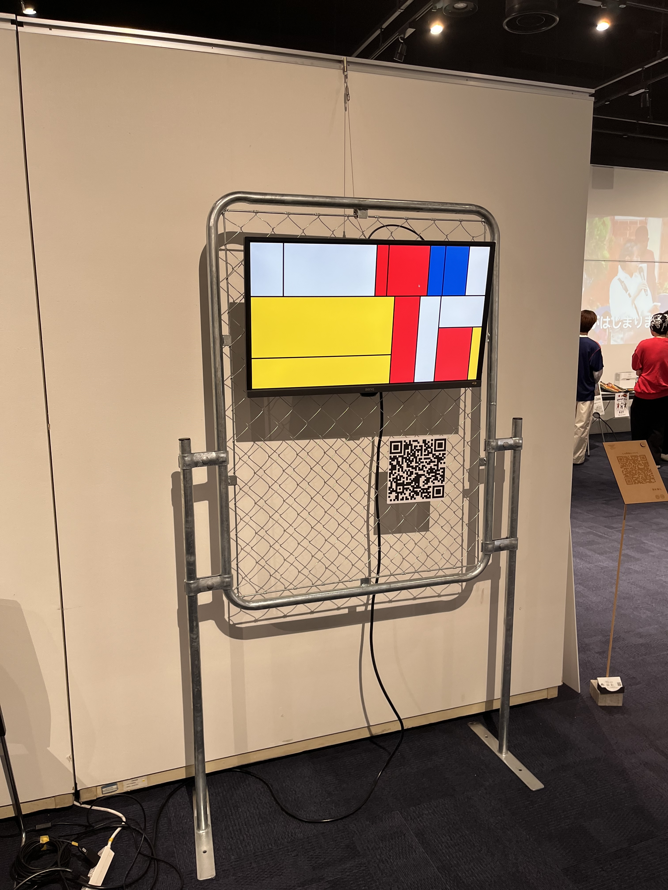
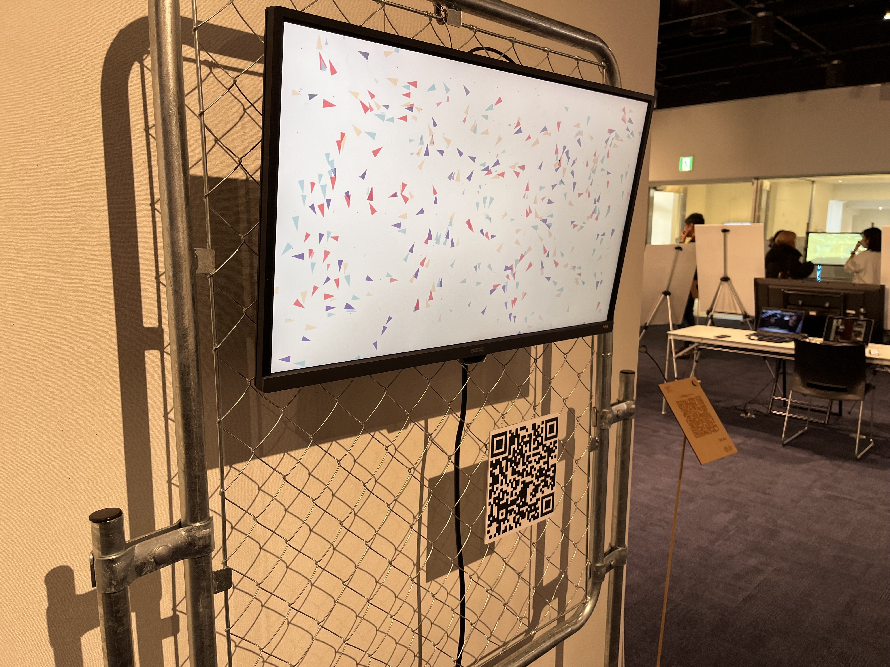

Aiと創造
- Processing
- p5.js
- ChatGPT 5.2
- Web Caption
- QRコード
- Algorithmic Visual
本作品は，生成AIによって制作された映像作品と，分岐するキャプションを用いて，AIと人間の創造性の関係を問い直すメディアアート作品である。
鑑賞者は映像作品を鑑賞した後，展示空間に設置されたQRコードを読み取り，作品に関するキャプションへアクセスする。そこでは，同じ映像に対して「人間が制作した作品」とする説明と，「AIが制作した作品」とする説明が提示される。
人間の愛のこもった手仕事や情熱を強調する説明と，AIによる創作の可能性を強調する説明を読むことで，鑑賞者は制作主体に関する情報によって作品の見え方や価値判断が変化することを体験する。
最終的に，本作品がAIと作者の共作であることが明かされる。作品は，AIか人間かという二項対立を提示するのではなく，その対立構造そのものを体験させることで，作者性，創造性，芸術の価値がどこに宿るのかを問いかける。
映像はProcessingおよびp5.jsを用いて制作したプログラムベースの生成映像である。制作過程では生成AIを用いて，コンセプトの検討，ビジュアルアイデアの探索，アルゴリズム設計，プログラム生成，パラメータ調整を行い，作者がそれらを選択・編集・統合することで最終的な表現を構築した。
本作品は，AIを単なる道具としても，完全な創造主体としても扱わない。AIという新しいメディアと人間が共に創造する可能性を，鑑賞者の解釈の変化を通して提示する作品である。



